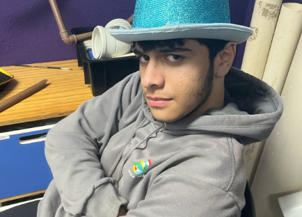

Quem sou eu?
Meu nome é Miguel Wolf, sou estudante do SENAI Florianópolis e atualmente curso Desenvolvimento de Sistemas. Nasci em Porto Alegre, no Rio Grande do Sul, e me mudei para Florianópolis ainda criança, onde vivo há aproximadamente 9 anos.
Tenho bastante interesse na área de tecnologia, principalmente em programação, desenvolvimento web e criação de projetos digitais. Durante o curso, venho aprendendo e desenvolvendo conhecimentos em lógica de programação, HTML, CSS, JavaScript e banco de dados.
Além da tecnologia, também gosto de música, jogos e conteúdos relacionados à informática e internet. Grande parte do meu interesse pela programação começou pela curiosidade em entender como sites, jogos e sistemas funcionam por trás das telas.
Sou uma pessoa mais reservada, mas gosto de aprender coisas novas, pesquisar assuntos que me interessam e desenvolver projetos criativos. Também gosto de passar tempo em casa estudando, jogando ou ouvindo música.
Ao longo do curso técnico e das atividades escolares, venho desenvolvendo não apenas conhecimentos técnicos, mas também habilidades como organização, criatividade, resolução de problemas e trabalho em equipe.

Sobre o Portfólio
Este portfólio foi desenvolvido com o objetivo de organizar e apresentar minhas atividades escolares realizadas durante os trimestres, separadas por áreas do conhecimento.
Aqui estão reunidos trabalhos, apresentações, projetos e atividades desenvolvidas ao longo do ano letivo, contendo descrições, imagens, links e habilidades trabalhadas em cada atividade.
Além de servir como registro acadêmico, este site também representa parte da minha evolução pessoal e do meu desenvolvimento durante o curso técnico no SENAI.